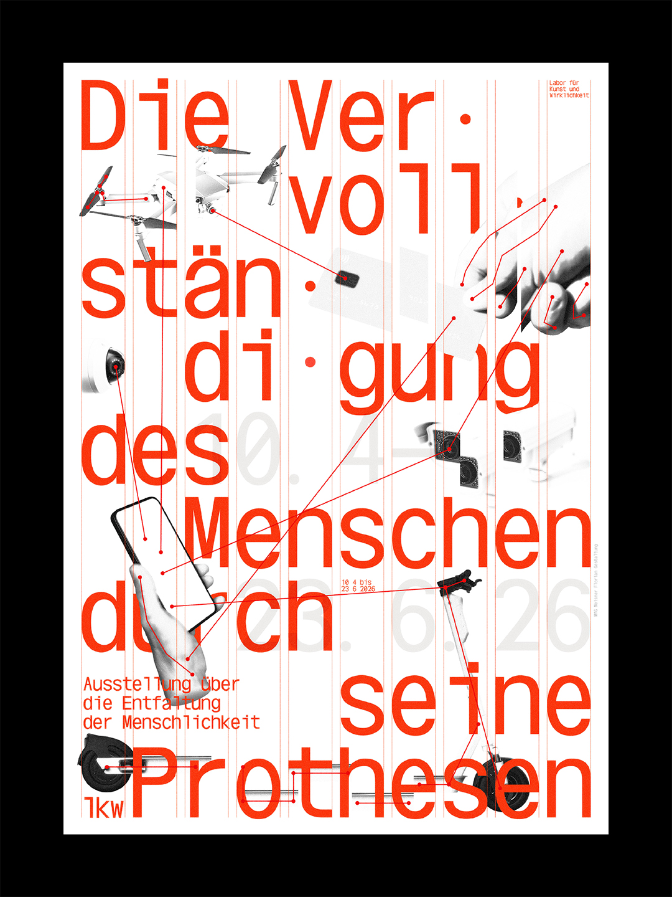
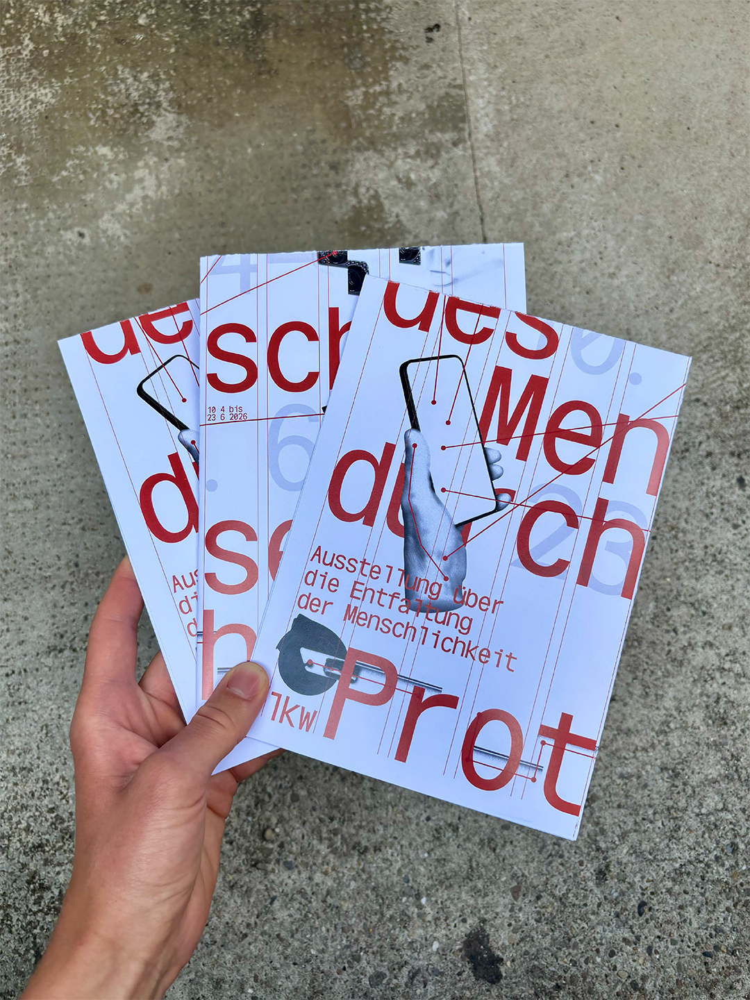
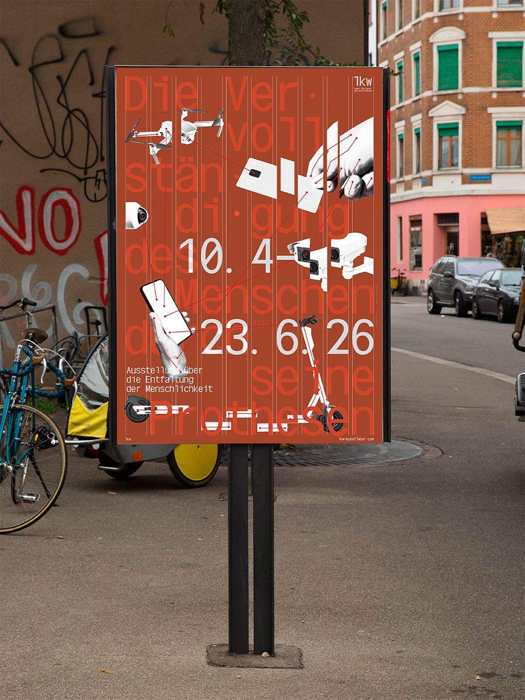
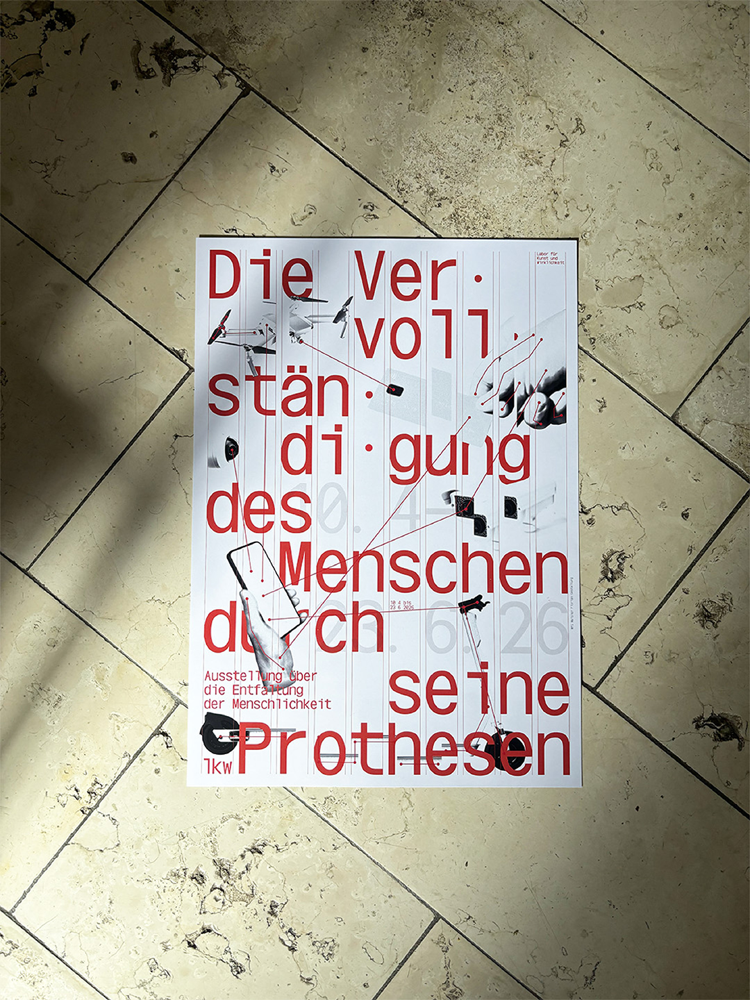
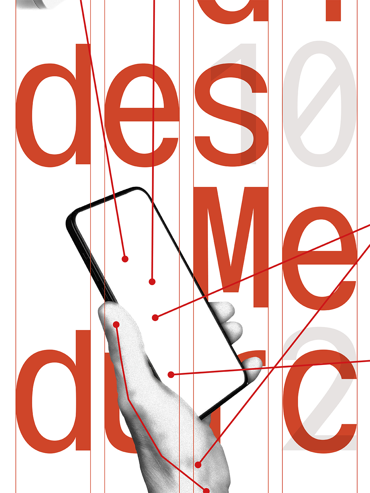

MfG
OMS – 2025
Orlandi Mono Specimen
Orlandi Mono Type Specimen as part of a fictitious exhibition about the alienation of human nature by its technical devices. The context is based on a further development of some of Otl Aicher’s thoughts from his book analog und digital.




